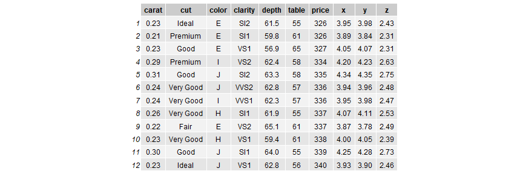

Step 1: Form of Data
- Data Science is most effectively used for data sets that have a number of identifiable "Observations" where each observation share the same parameters/columns.
GaryFH
Presentation
Data Science is most effectively used for data sets that have a number of identifiable "Observations" or "Subjects" where each observation/subject shares a number of common "data points".
An ideal form for such data is a spreadsheet with the rows being the individual observations and the columns the common data points.
## # A tibble: 8 x 7
## carat cut color clarity depth table price
## <dbl> <ord> <ord> <ord> <dbl> <dbl> <int>
## 1 0.23 Ideal E SI2 61.5 55 326
## 2 0.21 Premium E SI1 59.8 61 326
## 3 0.23 Good E VS1 56.9 65 327
## 4 0.290 Premium I VS2 62.4 58 334
## 5 0.31 Good J SI2 63.3 58 335
## 6 0.24 Very Good J VVS2 62.8 57 336
## 7 0.24 Very Good I VVS1 62.3 57 336
## 8 0.26 Very Good H SI1 61.9 55 337

## # A tibble: 53,940 x 7
## carat cut color clarity depth table price
## <dbl> <ord> <ord> <ord> <dbl> <dbl> <int>
## 1 0.23 Ideal E SI2 61.5 55 326
## 2 0.21 Premium E SI1 59.8 61 326
## 3 0.23 Good E VS1 56.9 65 327
## 4 0.290 Premium I VS2 62.4 58 334
## 5 0.31 Good J SI2 63.3 58 335
## 6 0.24 Very Good J VVS2 62.8 57 336
## 7 0.24 Very Good I VVS1 62.3 57 336
## 8 0.26 Very Good H SI1 61.9 55 337
## 9 0.22 Fair E VS2 65.1 61 337
## 10 0.23 Very Good H VS1 59.4 61 338
## # ... with 53,930 more rows



Since x,y&z were shown to be highly correlated to depth - they are removed from the dataframe. We look at the other potential variables to see if strong correlations exist. Note the correlations are relativel low - therefore all these variables are not removed.

## [1] "The AdjustRsq using only the carat variable is: 0.85"
## [1] "The AdjustRsq using all variables is: 0.90"
## [1] "The AdjustRsq using bestfit variables is: 0.93"
## price ~ carat + clarity + color + cut + table + depth + carat:clarity +
## carat:color + clarity:color + carat:cut + clarity:cut + carat:table +
## clarity:table + carat:depth + cut:depth + cut:table + table:depth +
## color:table + carat:clarity:color + carat:clarity:cut + carat:cut:depth +
## carat:table:depth + cut:table:depth + carat:cut:table + clarity:cut:table +
## carat:clarity:table + carat:color:table + carat:cut:table:depth +
## carat:clarity:cut:table
## [1] "The Mean Absolute Error for carat only variable is: 1029.21"
## [1] "The Mean Absolute Error for all variables is: 860.70"
## [1] "The Mean Absolute Error for fitbest variables is: 759.96"
## # A tibble: 35,999 x 39
## ID testcase ctrl_id sequence_num drive_slot serial link dev_name
## <fct> <fct> <int> <int> <fct> <fct> <fct> <fct>
## 1 1 Z284cb1 0 0 1 BTLD7~ 8 GT~ nvme8
## 2 2 Z284cb1 0 0 2 BTLD7~ 8 GT~ nvme9
## 3 3 Z284cb1 0 0 3 PHLD7~ 8 GT~ nvme10
## 4 4 Z284cb1 0 0 4 BTLD7~ 8 GT~ nvme11
## 5 5 Z284cb1 0 0 5 PHLD7~ 8 GT~ nvme4
## 6 6 Z284cb1 0 0 6 BTLD7~ 8 GT~ nvme5
## 7 7 Z284cb1 0 0 7 BTLD7~ 8 GT~ nvme6
## 8 8 Z284cb1 0 0 8 BTLD7~ 8 GT~ nvme7
## 9 9 Z284cb1 0 0 9 PHLD7~ 8 GT~ nvme0
## 10 10 Z284cb1 0 0 10 BTLD7~ 8 GT~ nvme1
## # ... with 35,989 more rows, and 31 more variables: bdf <fct>,
## # Upstream.status <fct>, Upstream.un_err <fct>, Upstream.cor_err <fct>,
## # Upstream.frm <fct>, SSD.status <fct>, SSD.un_err <fct>,
## # SSD.cor_err <fct>, Upstream.lane.0 <fct>, Upstream.lane.1 <fct>,
## # SSD.lane.0 <fct>, SSD.lane.1 <fct>, hostname <fct>, beforeIO <fct>,
## # fio.runtime <dbl>, Up.bad.dllp <dbl>, Up.bad.tlp <dbl>,
## # Up.port.err <dbl>, UpstreamREC <dbl>, HexSum <dbl>, RateUp <dbl>,
## # RateSSD <dbl>, ComboErr <dbl>, errortype2 <dbl>, Errortype <fct>,
## # errortype1 <dbl>, ErrortypeB <fct>, UpLaneTot <chr>, SSDLaneTot <chr>,
## # UpLaneErr <dbl>, SSDLaneErr <dbl>
## [1] "Variable called Upstream.lane.0 = 0x80003906-P5"
## [1] "5th&6th elements converted to dec - uplane0a= 0"
## [1] "7th&8th elements converted to dec - uplane0b= 57"
## [1] "9th&10th elements converted to dec - uplane0c= 6"
During the process of working with the data, numerous reports will be available - initially these are "working" documents whose purpose is to guide the team toward their goals. The Data Scientist should maintain these reports and avoid writing over previous reports so that prior reports are always available.
The need to provide interested parties with the ability to closely examine the data as the process unfolds often results in reports that are layered from overview charts down to detailed tables/plots. Rarely does one chart/plot/table exist that provides what is needed exist. Different report users will have multiple questions they want to investigate - thus "one size" does not fit all.
Publishing reports so that the team members can interact with the data and look at as much detail as they desire is important. Thus, interactive graphs/tables/plots are important.
## # A tibble: 10,000 x 11
## Exited CreditScore Geography Gender Age Tenure Balance NumOfProducts
## <fct> <int> <dbl> <dbl> <int> <int> <dbl> <int>
## 1 1 619 1 1 42 2 0 1
## 2 0 608 2 1 41 1 83808. 1
## 3 1 502 1 1 42 8 159661. 3
## 4 0 699 1 1 39 1 0 2
## 5 0 850 2 1 43 2 125511. 1
## 6 1 645 2 2 44 8 113756. 2
## 7 0 822 1 2 50 7 0 2
## 8 1 376 3 1 29 4 115047. 4
## 9 0 501 1 2 44 4 142051. 2
## 10 0 684 1 2 27 2 134604. 1
## # ... with 9,990 more rows, and 3 more variables: HasCrCard <int>,
## # IsActiveMember <int>, EstimatedSalary <dbl>